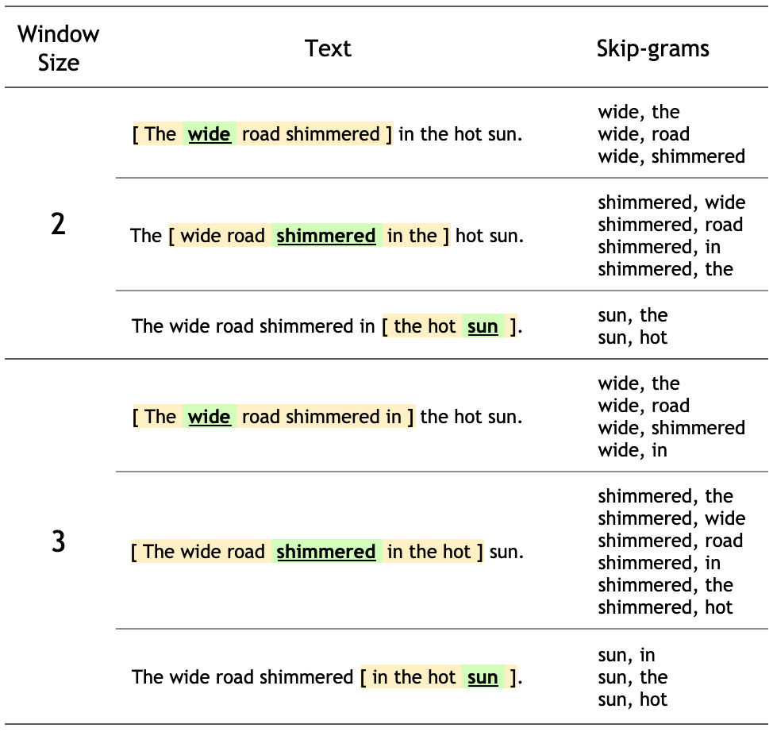

4.3 Word2Vec
Implement a skip-gram word2vec model with negative sampling from scratch!
Created Date: 2025-05-24
word2vec is not a singular algorithm, rather, it is a family of model architectures and optimizations that can be used to learn word embeddings from large datasets. Embeddings learned through
Note: This tutorial is based on Efficient estimation of word representations in vector space and Distributed representations of words and phrases and their compositionality. It is not an exact implementation of the papers. Rather, it is intended to illustrate the key ideas.
These papers proposed two methods for learning representations of words:
Continuous bag-of-words model: predicts the middle word based on surrounding context words. The context consists of a few words before and after the current (middle) word. This architecture is called a bag-of-words model as the order of words in the context is not important.
Continuous skip-gram model: predicts words within a certain range before and after the current word in the same sentence. A worked example of this is given below.
We'll use the skip-gram approach in this tutorial. First, we'll explore skip-grams and other concepts using a single sentence for illustration. Next, we'll train your own word2vec model on a small dataset. This tutorial also contains code to export the trained embeddings and visualize them in the TensorFlow Embedding Projector.
4.3.1 Skip-gram
While a bag-of-words model predicts a word given the neighboring context, a skip-gram model predicts the context (or neighbors) of a word, given the word itself. The model is trained on skip-grams, which are n-grams that allow tokens to be skipped (see the diagram below for an example). The context of a word can be represented through a set of skip-gram pairs of (target_word, context_word) where context_word appears in the neighboring context of target_word.
Consider the following sentence of eight words:
The wide road shimmered in the hot sun.
The context words for each of the 8 words of this sentence are defined by a window size. The window size determines the span of words on either side of a target_word that can be consider a context_word. Below is a table of skip-grams for target words based on different window sizes.
Note: For this tutorial, a window size of n implies n words on each side with a total window span of \(2n + 1\) words across a word.

The training objective of the skip-gram model is to maximize the probability of predicting context words given the target word. For a sequence of words \(w_1, w_2, \cdots , w_T\), the objective can be written as the average log probability:
where \(c\) is the size of the training context. The basic skip-gram formulation defines this probability using the softmax function:
where \(v_w\) and \(v_w'\) are the "input" and "output" vector representations of \(w\), and \(W\) is the number of words in the vacabulary. This formulation is impractical because the cost of computing \(\nabla log(p(w_O \mid w_I))\) is proportional to \(W\), which is often large \((10^5 - 10^7)\) terms.
The noise contrastive estimation (NCE) loss function is an efficient approximation for a full softmax. With an objective to learn word embeddings instead of modeling the word distribution, the NCE loss can be simplified to use negative sampling.
The simplified negative sampling objective for a target word is to distinguish the context word from num_ns negative samples drawn from noise distribution \(P_n(w)\) of words. More precisely, an efficient approximation of full softmax over the vocabulary is, for a skip-gram pair, to pose the loss for a target word as a classification problem between the context word and num_ns negative samples.
A negative sample is defined as a (target_word, context_word) pair such that the context_word does not appear in the window_size neighborhood of the target_word. For the example sentence, these are a few potential negative samples (when window_size is 2).
(hot, shimmered) (wide, hot) (wide, sun)
In the next section, you'll generate skip-grams and negative samples for a single sentence. You'll also learn about subsampling techniques and train a classification model for positive and negative training examples later in the tutorial.